Resident Evil 1
In this first entry to groundbreaking horror game series the S.T.A.R.S members head to the Arklay mountains to investigate a disturbence only to find zombie creatures roaming the area due to Umbrellas illigal experimentations
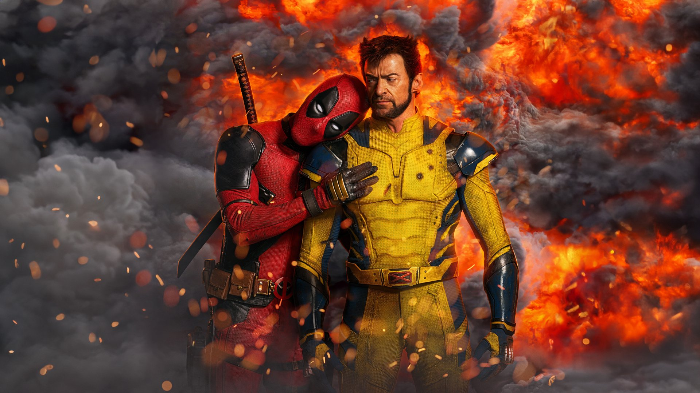
Deadpool and Wolverine
Wade Wilson has given up being an anti-hero, but when the TVA comes knocking at his door, he has no choice but to team up with a variant Wolverine to help save his universe from destruction in this comedic road trip action movie starring two best friends together.

Hell's Kitchen
Join Gordon Ramsay on this hit reality TV show about the making of becoming a great chef in this culinary bootcamp for the ages, where he will test their teamwork, palates, and his use of verbal insults.
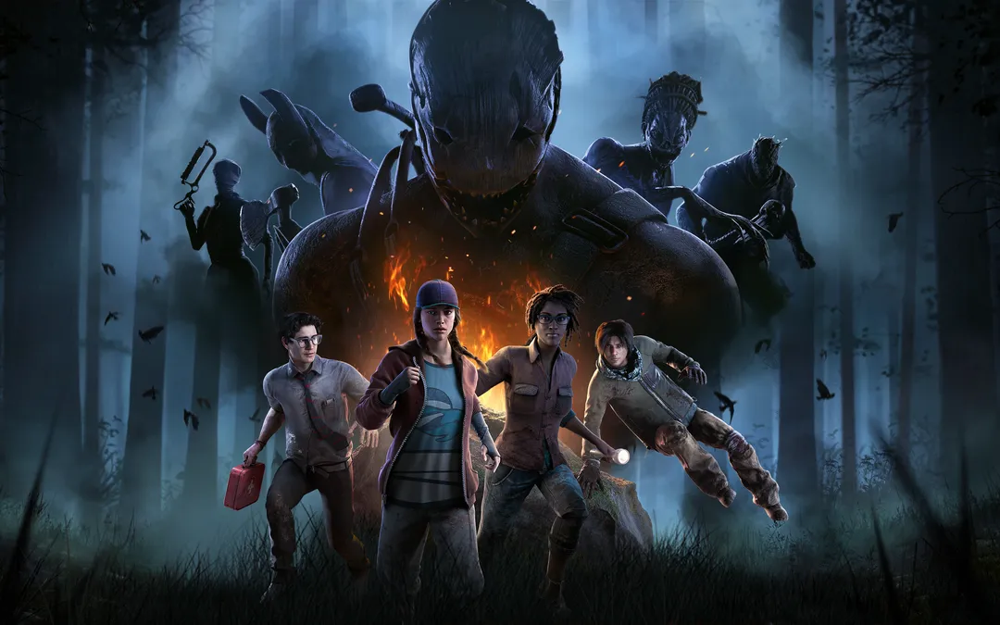
Dead By Daylight
Enter a realm filled with unending terror as you flee for your life or hunt to take a life in a game of cat and mouse created by an ancient evil of Eldritch origin known as the Entity, bringing forth killers and survivors new and old for an eternity of suffering.
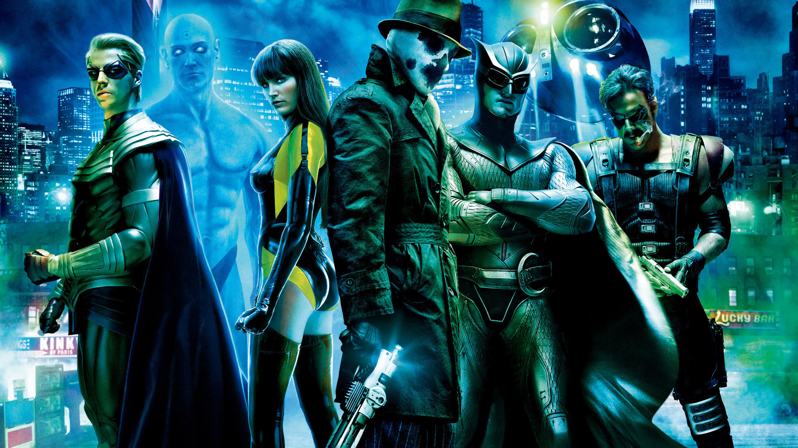
Watchmen
In this noir-inspired adaptation of the 1986 graphic novel, outlawed vigilantes must come together to stop an unknown threat against the world, where along the way they discover hidden truths, a conspiracy, and the threat of nuclear war on the horizon.

The Office
In this mockumentary-style comedy, the everyday lives of office employees working at Dunder Mifflin's Scranton, PA branch are chronicled. The show features a variety of characters and their interactions, highlighting the humor in mundane office life.
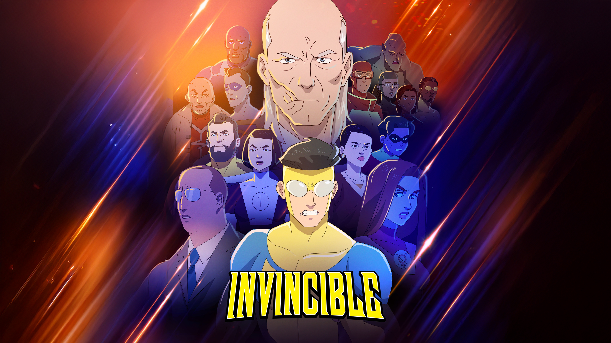
Invincible
Based on the popular and well-known comic series, this gritty and bloody animated series follows the story of Mark Grayson, son of Omni-Man and the newest hero on the block, ready to make a name for himself while facing threats from the Viltrumite Empire, alternate dimensions, and Earth's villains and very own GDA.

God of War (2018)
In this action-adventure game, you take the role of Kratos, former Greek god of war, as he takes a new step away from vengeance and blood to go on a quest with his son Atreus to spread the ashes of his wife Faye. Along the way, they fight many enemies from draugr to Norse gods in this gripping tale of fatherhood.

Horrible Bosses
Three friends who are struggling with their jobs because of drug-abusing, sex crazed, and manipulative bosses decide to kill their bosses for a better work environment but their plans always get wrecked by their own inability to commit murder in this groundbreaking explicit R-rated comedy.
.jpg)
Halloween (1978)
In this horror classic in Haddonfield a young Michael Myers kills his 17 year old sister at age 6 he is then transported to Smiths Grove where Samual Lommis tries to help the child only to discover how Evil the child was, but on Halloween night Michael escapes and returns to Haddonfield to target a group of teenagers including a woman named Laurie Strode, so Dr. Loomis must find a way to stop him at any means.

Bendy and the ink Machine
Retired animator Henry Stein returns to the very studio he help found with his partner Joey Drew only to discover that there are ink like creatures in the deformed shape of the cartoons he helped create, now he must escape the studio making new friends and Demon and Angel like enemies along the way.

Creature Commandos
Amanda Waller forms a new team this time of only monsters with dark, horrid pasts and secrets, to fight against a powerful sorcerer named Circe only to discover there is more to this plot than intended with the threat of a destroyed and conquered future on the line.
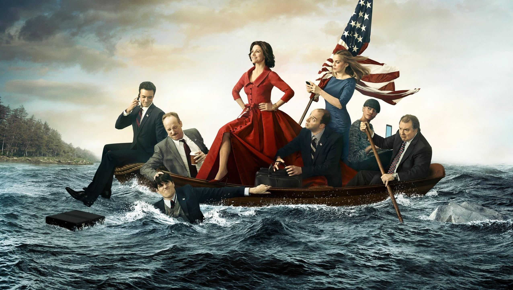
Veep
A political satire based on the fictional ins and outs of the U.S government with Selina Meyer attempting to raise her status with her incompetent, self sabotaging, dark insult ridden team of misfits who have conflicting personalites and ulterior motive for their political careers.

Mortal Kombat Shaolin Monks
After Liu Kangs victory against Shang Tsung in the first Mortal Kombat tournament Shao Kahn decides to have a second tournament in outworld so Liu Kang and Kung Lao must fight and Fatality their way through outworld to save Earthrealm from Shao Kahns tyrannical rule.

Spider-Man Brand New Day
After having his identity erased from his loved ones Peter Parker focuses soley one Spider-Man and helping the city but when a new foe taking controll of people for an ultirier motive, and genetic mutation due to isolation triggers Spider-Man must decide if its better to fight the never ending battle alone or enlist the help of his friends new and old.

Bendy and the Dark Revival
Audrey an animator in Archgate pictures whole life is put into question when she is pulled into the cycle within the ink machine by Wilson who has halted the cycle and taken control of the world inside, and so Audrey must survive the cartoon world and stop him and bring peace to all trapped within the inky world.

The Boys
What if a company manage to create a serum to turn anyone into a superheroe and those heroes were revered as celebrities and gods, so they abuse their power for their own gain that is where The Boys come in to give them a bloody good spanking with the worst of them being a golden boy and god like figure but actually a homade experiment and all around full blown pyschopath Homelander and worst enemy to Billy Buther the leader of The Boys.

Ghost of Tsushima
After a horric massacre of Samurai vs the mongal empire and capture of the Jito of Tsushima it is all up to Jin Sakai nephew to the Jito to liberate his home from the Mongals with the aid of new allies such as Yuna and Taka he will go to great lengths to save his people even break the very samurai code that had forged him and his family for generations to become something far worse, a Ghost of who he was.

Mortal Kombat Deadly Alliance
After years of being hunted by his very own spectre Scorpion for the murder of his clan and family, Quan chi stumbles upon the remains of the Dragon Kings army and then forms an Alliance with Shang Tsung for world domination, together they defeat Shao Kahn and Kill Earthrealms greatest hero and Champion of Mortal Kombat Liu Kang, so it is up to Raiden former elder god to gather a team Earthrealm's mightest to stop this Deadly Alliance.

Batman Year One
In this origin story of DC's most well known hero we meet Jim Gordon a newly appointed Lieutenant of GCPD who does not believe Gotham can be free of corruption until a mysterious masked viglante known as the Batman surfaces who in truth is billionare playboy Bruce Wayne dedicating his life to crime fighting after the loss of his parents.

IT Welcome to Derry
When a group of very different kids band together to uncover and stop a unknown ancient evil plaging their town for decades that being Pennywise the Dancing Clown, as they do the military staged in Derry attempt to uncover and exploit the mysterious phenomenon it for themselves.

My Adventures with Superman
In this new retelling of DC's most iconic hero Superman navigates the new found commitment of being a new Hero in metropolis with the aid of Jimmy Olsen and Lois Lane he will discover new powers, super villans, and the threat from his own people and future.
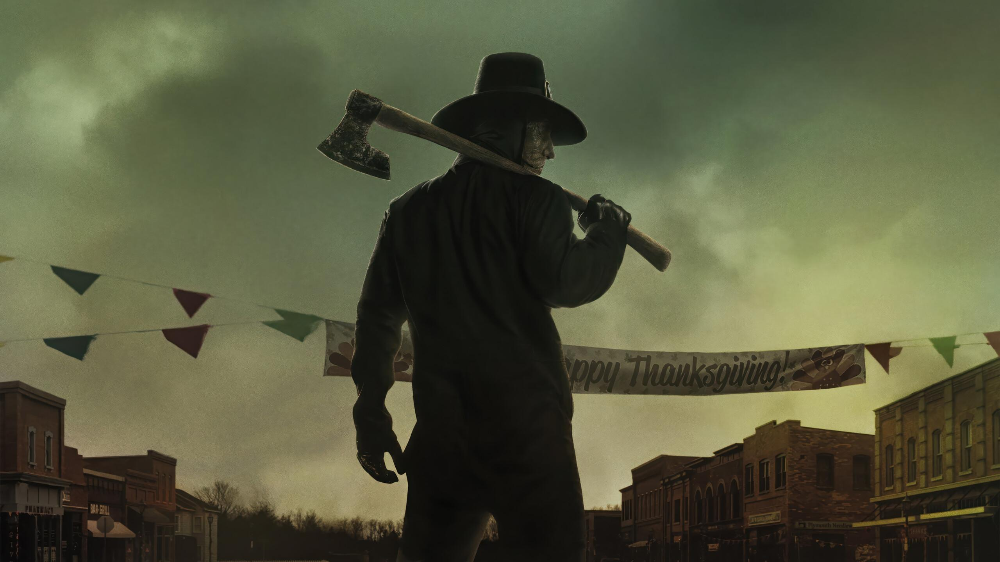
Thanksgiving
After a brutal black friday event that scarred a small town due to the lack of care, supervision, and accountability a mysterious killer then appears targeting those involved and guilty in the brutal massacre that scarred the town for some sort a personal and brutal vendetta that the group of teenagers vow to uncover.

Mortal Kombat Deception
After Earthrealms forces fail to stop the Deadly Alliance Raiden challenges them to Mortal Kombat which ends in his defeat, so seeing no point in working together anymore Shang Tsung and Quan Chi battle so after they do the former ruler of Outworld and leader of the dragon army Onaga the Dragon king returns to reclaim control over all the realms. unbeknowst to him the very warrior he tricked to serve Shujinko makes a vow to defeat the Dragon king through the power he gifted him through Deception.

Resident Evil 2
When new rookie Leon Kennedy and college student Claire Redfield both come to Raccoon City they discover a foul and disturbing truth the city is overrun with Zombies and it is up them both to go their own ways to to help save civilions and stop the horrific mega corporation repsonsible for the city's downfall all awhile meeting new allies and enemies while fighting against mutated abominations.

Terrifier 2
After a brutal attack which leaves Art the Clown Dead he is somehow resurrected ready continue his horrific genocide on anyone he finds namely a girl by the name of Sienna Shaw who discovers more about her late father and what he has sketched out which includes a drawing of Art himself which connects her and Art in some Good vs Evil scenario which she must uncover to save her brother from Art's grasp.
.jpg)
Daredevil (2015)
After being blinded in a accident trying to save an old man young Matt Murdock loses his sight, his father to mobsters and is trained in martial arts by a old man named Stick he decides to become a lawyer with his best friend Foggy Nelson but after years of hearing cries for help he then dons a mask and becomes Daredevil protecting innocents in Hell's Kitchen from threats such as the Kingpin, The Hand, former love and assasin Elektra and murdering anti hero the Punisher with the aid of his partner in law Foggy and receptionist Karen Page they will uncover the corruption in New York.

The Inbetweeners Movie
After graduating high school the four awkward teen boys decide to go on holiday and go to Malia to party, meet women, and drink, while there they meet four british women who most of them try to impress but get dragged into chaotic misadventures by their own effort for romantics and Simon's efforts fix his breakup with his ex Carly in this groundbreaking UK comedy.

Mortal Kombat Armageddon
After hundreds of years of Mortal Kombat tournaments and the ever growing roster of powerful kombatants the fail safe by Delia and Argus has been triggered, Blaze is ready to oversee the destruction of the kombatants while also testing the sons of Argus, Taven and Daegon to see who will decide the fate of the warriors whether to kill them all, or merely strip them of their powers. So prepare for ARMAGEDDON!!!
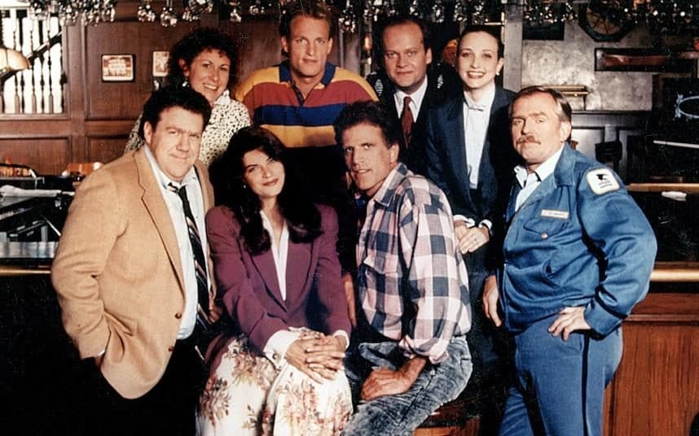
Cheers
Former pitcher of the Red Sox Sam Malone owns, runs, and manages a bar with waitresses such as Carla and Diane with bar patrons such as favorite Norm and know it all Cliff with pyschitrist Frasier, as they navigate life, friendship, and rivalries and more in this all around sitcom classic.

Scott Pilgrim vs the world
Scott Pilgrim is a guitarist for a band that only has two fans, living with his best friend Wallace living a normalish video game life when he goes to a party and meets Ramona Flowers a new girl to Toronto who Scott beileves is the love of his life and starts a relationship with her but in order to continue he must defeat her seven evil Exes in order to continue dating her all the while learning more about each other and the mistakes they made in their respective past.

Resident Evil 3
After the Arklay mansion incident Jill Valentine makes it her mission to stop Umbrella's illegal experiments but just she is ready to leave town a large bio weapon mutation known as the Nemesis hunting down all members of S.T.A.R.S. attacks her just as the outbreak of zombies falls upon Raccoon City it is up to her and new allie who is also Umbrella rescue team Carlos Olivera to stop Umbrella, destroy the Nemesis and stop Raccoon Cities destruction.

Big Bang Theory
In another cult hit sitcom we meet a group social awkward, geeky, nerdy group of Caltech scientists along with their neighbor Penny as they navigate their scientific minds, comics, video games and their attempts at social, romantic and even everyday lives.

A Nightmare on Elm Street
After a prolific child murderer known as Freddy Krueger is let go on a technicality a group of parents led by Officer Thompson band together and torch Krueger alive, years later he comes back to take revenge by taking their children most notable Nancy Thompson daughter of Officer Thompson and the only one that can stop Freddy's horrific nightmare.

Jujustu Kaisen
A young teen name Yuji Itadori is pulled into the world of Jujustu sorcerers through him consuming the finger of Ryomen Sukuna king of curses, so in turn a man named Saturou Gojo offers to mentor him in the ways of Jujustu with the aid of his other classmates such as Megumi Fushguro, Nobara Kugisaki, and many others ready to protect the world from the evil of cursed spirits roaming the globe with the threat of Sukuna still hanging large.

Batman Arkham Asylum
Once again Batman has defeated the Joker and taken him back to Arkham but this time is different Joker has orchestrated a massive breakout, freeing inmates from blackgate, supervillians, and mutated monsters created by Joker ready to destroy Gotham City, it is up to Batman to stop him from unleashing monsters onto Gotham along the way discovering Joker's collaberators, secrets of the founder of the Asylum and villans of Batman's rogues gallery ready for revenge.
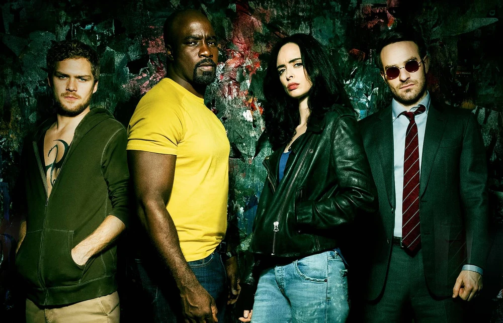
Defenders
After the hand's defeat by Iron Fist and Daredevil in their respective shows they return with a new plan to harvest the remains of a long dead and forgotten dragon in New york from midland circle, not knowing that the forces of Daredevil, Jessica Jones, Luke Cage and Iron Fist banded together to stop them from destroying New York and harvesting the dragon mythical power.

Freddy vs Jason
The residents of Springwood had lived many years of peace free of the Nightmare that plagued them, until Freddy Krueger returns again but this time with the aid of fellow killer Jason Voorhees by manipulating him into killing in Springwood to make them remember Freddy until a group of teenagers discover their alliance and plan to pit Jason against him in this Horror clash of the century.

Batman Arkham City
After Joker's take over of the Asylum, a professer known as Hugo Strange starts a full sanction new prison known as Arkham City with full permission from the mayor of Gotham, Soon after he learns of Bruce Wayne's identity and has him thrown in the prison so Bruce must don the cowl once again as Batman and fight his way through the super prison taking on the likes of thugs, supervillians, and uncover Strange's mysterious protocal 10 before the night is done, in this groundbreaking DC hit game.
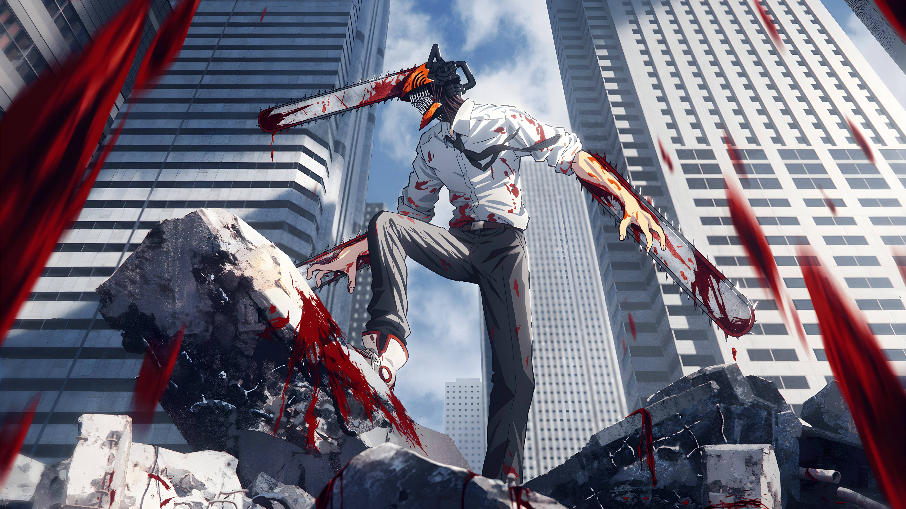
Chainsaw Man
A young teen living in squander is in a massive debt due to his fathers gambling ways and makes a living devil hunting with his devil friend Pochita but all that changes when a horde of zombie like devils caused by the Yakuza nearly kills him, Pochita then gives him life so that he may live it up to the fullest while also merging with his heart turning him into a hybrid devil leaving him to kill all the zombies he is then recruited by Makima to join the Devil extermination organization to partner with Aki and Power to hunt and kill Devils to protect the public while also uncovering Makima's dark intentions with Denji.

Moon Knight
Steven Grant a mild mannered person working at a mueseum begins to experince strange days of him waking up at random places and signs of him being influence by something or someone namely what seems to be an alternate personality known as Marc Spector, mercenary, and the moon god Knonshu's fist of vengence punishing the guilty, who is on a mission to stop a new foe known as Arthur Harrow from unleashing a evil god know as Ammit. So Marc and Steven with the aid of Marc's wife Layla must put aside their differences and stop Arthur from plunging the world in horrific judgment.
.jpg)
God of War (2005)
Kratos a spartan warrior and servant of the Gods of Olympus must journey to Athens and on the back of the Titan Crono's to retrieve pandora's box the only weapon that can be used to kill the God of War Ares before he destroys the city of Athens while also relieving the visions of his past due to the oath Kratos had made with Ares years ago which led to the death of his family, consumed with hatred for him Kratos will due what he must to retrieve pandora's box kill Ares and hopefully be free of the visions that plague him as promised by the Gods of Olympus for good
.jpg)
Avengers (2012)
As Nick Fury director of S.H.E.I.L.D begins to put phase two into motion Loki of Asgard enters the compound taking the tesseract along with multiple agents away to prepare for an invasion which leads Fury to call upon the mightest heroes on Earth to Assemble together and stop Loki's attempted rule over midgard and uncover hidden truths about S.H.E.I.L.D.'s operartions and put petty squables aside to save their world.

Young Justice
After investigating the Cadmus labs and discovering a clone of Superman named Superboy, the Justice League decide to make use of their wards special tactics taught by them and form Young Justice to take care of any threats that the League themselfs cannot deal with alone, using their combine powers, strengths they forge ahead and stop Evil no matter the cost.

Marvel Ultimate Alliance
When the S.H.E.I.L.D helicarrier is attacked by Dr.Doom Nick Fury calls upon a team of Heroes consisting of Captain America, Spider-Man, Wolverine, Thor and many more to stop Doom and a team of supervillians from gaining ultimate power, so the Heroes must journey across the Marvel Universe from the Skrull homeworld to the darkest corners of Mephisto realm to gain the advantage against Dooms forces.

Family Guy
A new englund father and husband and his unique dysfunctional family live each day through the tropes of television, witty cutaways and irrelvelent chicken fights and their town full of wacky and eccentric characters living out their lives on a day to day basis with real life events often having a effect on the whole of Quahog.
.jpg)
Halloween 2 (1981)
After being shot by Dr.Loomis six times somehow the Shape rose again to satisfy his urge and willingness to kill, as he does he learns of Laurie Strode being sent to Haddonfield hospital where Michael's horrific sights are set on for more murder and bloodshed, all the while Sam Loomis is still on the hunt for him only to discover a horrifying truth regarding Michael and Laurie that dates back to his first murder back in 1969 and races to the clock to find and end him for good.

COD Black Ops
Alex Mason a CIA operative is held in a chair strapped down and shocked for information on a code of numbers inside his mind put in by Dragovich for an unknown purpose. So Mason must remember his prior missions, imprisonment, his brothers in arms, and his new ally Reznov and with the threat of Dragovich's plan still large he will uncover the meaning of the numbers and stop him.

That 70's Show
In the town of Point Place in the early 70's there reside six high school friends that live out each day growing up, trying to get beer, constantly getting high, and attempting to get romantic with overbearing mother and strict tough talking father of Eric Forman, Kitty and Red constantly putting a dent in there plans and and making sure they stay out of trouble.
.jpg)
The Batman (2022)
After the murder of the Mayor of Gotham by a new serial killer by the name of the Riddler Batman and Jim Gordon with the aid of burgaler Catwoman must scower over the city's crimnal underworld to find the pieces and put them in place along with the dark history that Batman's parents is heavily tied to in a way he could never have predicted.

The Inbetweeners
Four social awkward and crudge high school friends navigate their lives together attempting to become cool, get girlfriends, which constantly gets ruined by their own ideas, but also manage to get constantly humiliated by their attempts at popularity and clumsy attempts gaining popularity.

God of War 2
After killing Ares and taking his title of God of War, so years pass and Kratos has been alienated by the other gods of Olympus he drowns out the past by conquering lands with his warriors of sparta. All the triumph ends when Zeus king of the gods comes down and takes Kratos's power using the blade of Olympus and proceeds to kill Kratos but with his persistence and the aid of the titan Gaia he returns to search for the sisters of Fate to go back in time and defeat Zeus before his death and have his revenge.
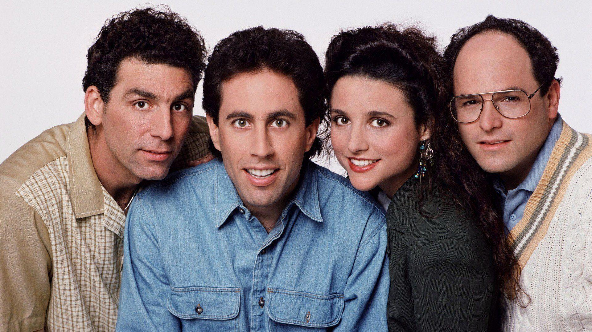
Seinfeld
The hit NBC sitcom follows Jerry Seinfeld and best friends George, Elaine, and Kramer in their every day neurotic misadventures in New York, whether it be making a tv show about nothing to miner everyday annoyances, like parking, resturant waiting, and dating strange and unique people they will get into a variety of strange trouble with their strange tendencies.
.jpg)
Mortal Kombat (2021)
MMA fighteer Cole Young discovers a strange tatto on his chest resembling a dragon which means it is time for Kombat so Cole, Sonya Blade, Kano, and Jax Briggs journey to Raiden's sky temple to train for the tournament all the while Cole carries a strange dagger that dates back centuries to Shira Ryu clan member Hanzo Hasashi before his death at the hands of Bi Han of the lin Kuei, who is now under the moniker of Sub-Zero and working with Shang Tsung and the forces of Outworld in the tournament with the threat of Earthrealm being conquered at stake.

Mortal Kombat (2011)
After Shao Kahn takes the power of Blaze from the pyramind of Argus he then takes pleasure in torturing Raiden which leaves Raiden to send a message to his past self "He Must Win" getting this message past Raiden does all he can with the aid of Earthrealms mightest kombatants to stop Shao Kahn invading and prevent this horrific future from coming to pass in the ninth installment in the hit M-rated fighter series.
.jpg)
TMNT (2012)
When the last survivor of the Hamoto clan adopts four turtles in New York but after a scuffle with an alien group known as the Kraang he and the baby turtles are mutated into humanoid turtles leading to Splinter to raise them and teach them the way of the ninja and 15 years later he lets them into the world and the brothers Leo, Raph, Donnie, and Mikey discover their origin at the hands of the Kraang, the evil of the foot clan led by Shredder, and various mutants running rampant in New York but together with allies such as April o Neil and Casey Jones they will stop any threat that comes in their way as brothers.
.jpg)
Transformers
When young teen Sam Witwicky buys a used car he discover their is more to it than meets the eye when he discovers it is an alien machine soldier part of a team of rebels known as Autobots from the planet cybertron led by Optimus Prime. They have to the planet to stop the Decepticons from retrieving a device known as the all-spark and using it to teraform the planet so Sam and new love interest Mikaela must find the all-spark and help the Autobots.

Spongebob Battle for Bikini Bottom
Once again Plankton makes an invention to steal the Krabby patty formula from Mr.Krabs and take over the world but he failed to flip the lever to have his robot army under his control so they kick him out and attack and wreak havoc on Bikini Bottom so it is up to Spongebob, Patrick, and Sandy to stop the robots, save friends from them, collect golden spatulas, underwear and destroy robot bosses left and right to save their underwater home while plankton plans on regaining control again of his army.

Total Drama
Chris Mclean selects 17 teenage contestents to partake in grueling, frightening, and painful challenges to have the chance to win fame, fortune and reality TV exposure for the ages where friendships are made and alliances are formed with these insane contestents, in this hit multi season show of popular animated reality show.

Jujustu Kaisen Zero
Taking place before the main series we meet Yuta Okkotsu a newly made special-grade sorcerer who is haunted by his deceased childhood best friend Rika who is in the form of a special grade curse spirit, but must learn how to use his newly found power with his fellow students to stop Satoru Gojo's old friend Geto from killing all non sorcerers for his new world order of only jujustu users.

Daredevil Born Again
After an assination by Bullseye that ends in the death of Foggy Nelson Matt Murdock gives up Daredevil and lives out as a Lawyer in the city but when Wilson Fisk runs and wins as mayor of New York City and enlists a task force to hunt vigilantes, and the threat of an serial killer using his victims blood for his paintings Matt decides to return as Daredevil and stop Fisk's new tyrannical rule with the aid of old allies Karen Page and Frank Castle/The Punisher.

Dragon Ball Z Kakarot
based on the popular anime series by Akira Toriyama, set in the world of Dragon Ball z relieve sagas from the original through the perspective of various characters such as Goku, Piccolo, Vegeta, and Gohan to fight against terrifying enemies from the Saiyans, galactic emporers, and demons of ancient evil so Goku and his friends will band together to defeat these enemies all the while gaining more power and forms to match.
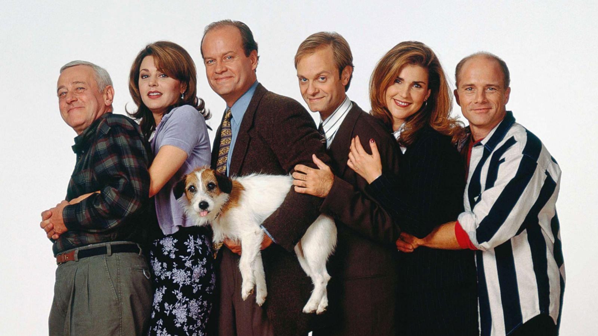
Frasier
After divorcing his wife in Boston he comes to Seattle and hosts a podcast show talking about psycology with host Roz while his father and dog move in causing him to hire a physical therepist Daphne Moon to take care of him while his brother Niles hopelessly falls for her and with them together they go on about everyday lives hosting disasterious dinner parties, get very ill advised dates, and verging almost illegal activites in this groundbreaking comedy spinoff of Cheers.
.jpg)
Friday the 13th (2009)
In this reboot off of the groundbreaking horror franchise Pamela Voorhees has been killed after her horrific murder spree in Crystal Lake 1980 while her young son Jason watches from the shadows and picks up where she left off. 3 decades later Jason continues his murderous rampage and kills yet another group of campers but decides to take a young woman by the name of Whitney Miller due to her close resemblence to his late mother, afterwords her brother Clay comes to the woods looking for her and meets a group of teens staying in a lake house who soon are picked off by Jason one by one, so Clay must find his sister and escape the machete weilding maniac before they are next.
.jpg)
Spider-Man (2018)
After years of fighting against crime lord Wilson Fisk, Spider-Man finally manages to bring him to true justice and the city faces subsequient peace for a time until a new known as the Demons take over the criminal underworld which leaves Spider-Man to face off with them all but as he does he discovers a conspiracy that them to Oscorp company owned by mayor Norman Osborn that dates back years ago but with the aid of Mary Jane Watson, Yuri Watanabe, and more to stop the Demons and supervillians and bring back peace to New York.

Captain America Civil War
After a explosion in Lagos by the Scarlet Witch the government creates the Sokovia accords to keep heroes from being deployed without supervision which Tony Stark and a handful of other heroes are siding with while Steve Rogers sides against it all the while Bucky Barnes is framed for the bombing at the senate which the king of wakanda was attending in turn T'challa makes his mission to find the Winter Soldier while Zemo finishes his plan while the heroes fight each other.

Ghost of Yotei
When a clan of bandit like "samurai" known as the yotei six take revenge on a mother and father by killing them in their home and shooting their son off the edge their daughter Atsu who they impaile on the burning tree she escapes learns the techniques of samurai while fighting in many wars she then returns to her home years later ready to take revenge on the Yotei six by hunting each down while also taking bounties and meeting many new masters to help with her revenge all the each kill gains her more and more prominence with the people on Yotei island naming her the Onryo a vengeful Ghost.

Kitchen Nightmares
World famous michilean star chef Gordon Ramsay jouneys across country to aid failing resturants that need business drumming again with owners desperate enough to do anything to owners that have to big of egos to let go, so Gordon will judging the food, decor, staff, and bosses to ensure he does what he can for the resturants to ascend whether the owners like it or not.

Heart Eyes
Over the last couple valentines days there have sightings and bodies belonging to a prolific serial killer named HLK the Heart Eyes Killer who has been murdering couples around the country which leads him to Ally McCabe a valentine hating jewelry designer and marketing colleague Jay Simmons who are soon targeted by HLK and over the course of the night they will try and survive against this mysterious holiday killer.
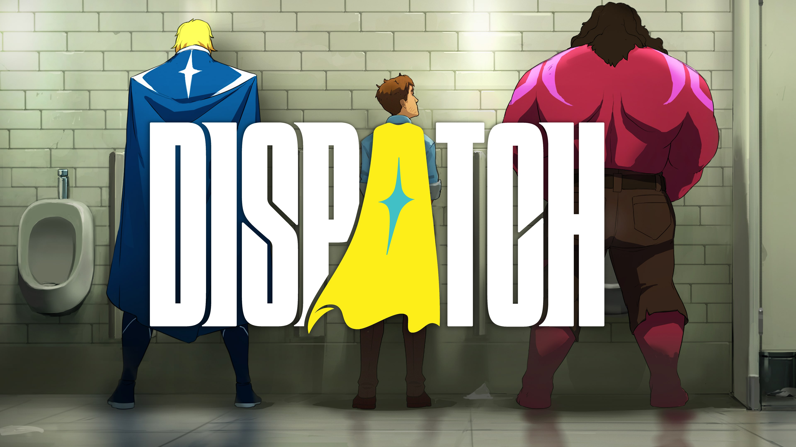
Dispatch
After attempting to get villan Shroud the murderer of his father, Robert Robertson's suit that he uses for superheroing known as Mecha Man the suit is destroyed and has nothing to fix it with that is until he meets Blonde Blazer a heroine in charge of a superheroing dispatch survice known as SDN where she recruits Robert to head the Pheonix program where former villans are recruited to go and save lives but the group are very unique and diverse, so Robert must band them together while also fixing his suit and find Shroud decide whether to be a hero or a man filled with vengence, the choice is yours.

Spawn The Animated Series
Al Simmons a mercenary and CIA operative is betrayed and killed fellow soldier Chapel by the orders of his superior named Jason Wynn, but as he is sent to hell he strikes a deal with Malbogia an ancient demon to see his wife one last time so he grants him that and returns to earth five years later as his new hellspawn to kill those belonging of hell, but Al scattered and confused goes to his wife Wanda and finding out she is married and has a child with Terry Fitzgerald, Spawn then tries navigate life as a hellspawn does what he can do punish the evil of the world all the while still longing for his wife.

Terrifier 3
One year after their brutal attack Jonathon and Sienna Shaw try and have a normal life but with people still pestering them after their encounter with Art the Clown little did they know that Art has returned more brutal than ever ready to take the holidays by store with the help of victim Victoria posessed by an a demon of hell ready to cause mayhem to Sienna's other relatives all the while Art donns a bloody clown costume.

Halloween the Game
playthrough the iconic horror slasher world of Micheal Myers as he escapes Smith Groves sanitarium and returns to his home town of Haddonfield to continue his bloody killing spree in the story mode where you relieve the events of the film in the Shapes POV or multiplayer where you can play against the teens of Haddonfield killing them and escaping or play as the teens and try to call for help, attack Micheal, or jus survive till a exit is opened, so return to Haddonfield to dole out murder or saftey for your fellow victims.

Bendy Lone Wolf
Boris doing all he can to survive in the studio makes it a habit to regulerly go out and look for supplies while the Ink Demon stalks his evry move all the while Boris discovers keys, audio logs, and mysterious items that unlock more mysterious, enemies and possible somewhere away from the danger and free of the Demon that will never let him rest, the dark creatures that haunt the halls, Angels ready to dissect him for parts and other survivors living their lives in the dark world of Joey Drew Studios.

Avengers Earth's Mightest Heroes
After a breakout in all four supervillian prisons a group of heroes such as Iron Man, the Hulk, Thor and more that join later on decide to form a team that will stop any threats to the world by defending it from the supervillians, time traveling conquerers, a alien conspiricy infiltration, and a war between alien races but no matter what happens and whoever is on the team they defend their home, make sure to save as many as they all the while staying together.

Batman Under The Red Hood
After the death of his partner Jason Todd who was the second Robin at the hands of the Joker five years later he returns ready to take over Gotham's underworld from the inside all while Batman and first ward Nightwing attempt to figure out his resurection and stop his hostile takeover of Black Masks operations all culminating with a showdown with the Dark Knight.

Resident Evil 4
When the presidents daughter is kidnapped he enlists the aid of Leon Kennedy a survivor of Raccoon City and a skilled fighter to find her her little did Leon know that the kidnappers was a religous and cultist island full of towns people all working for their suppose lord known as Osmund Saddler, so Leon must fight and shoot his way off the island with Ashley with the aid of fellow Raccoon city origins Ada Wong, and new unknown allie named Luis Navarro who has ties to the mutations of the island but despite it all Leon will not stop until his mission is complete.

The Ricky Gervais Show
Ricky Gervais, Stephen Merchant, and Karl Pilkington as they disscuss irrelevent topics in the real world, monkey news, and Karl's diary and as they do they have Karl's cynical and nonsensicle take on the world as he sees it.